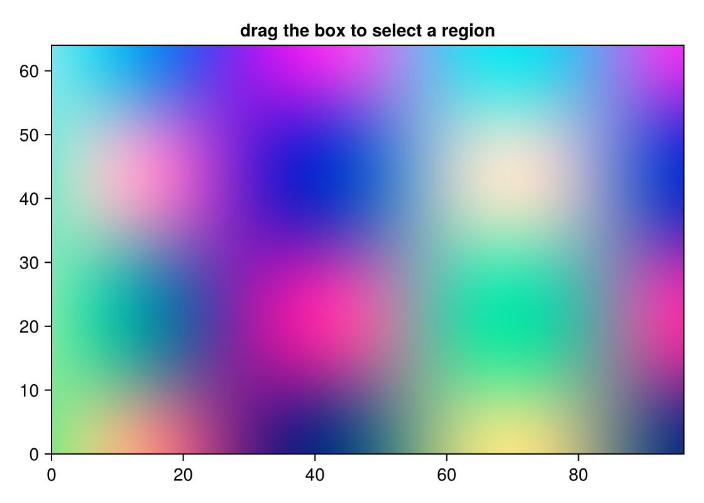

Image ROI
The figure is an RGB image. The box selects a window of cells, not a list of pixels. On release the bond is one GridWindowEvent: 1-based inclusive i1:i2 and j1:j2, plus the data bounds. R[region] is R[region.i1:region.i2, region.j1:region.j2]. The image array stays in Julia.
The grid layer exists so the brush has cells to land on. The box is the outline; the enclosed block is fill-only. See Inspect a grid and Brush a region.
Notebook as text
Drag the box over the image. In your notebook, the last cell slices the arrays inside the box when you release.
Draw the image, and brush it with a box that selects the pixel grid.
begin
nx, ny = 96, 64
clamp01(v) = clamp(v, 0.0, 1.0)
R = clamp01.([0.5 + 0.45 * sin(i / 9) * cos(j / 7) for i in 1:nx, j in 1:ny])
G = clamp01.([0.5 + 0.4 * cos(i / 11) for i in 1:nx, j in 1:ny])
B = clamp01.([0.5 + 0.45 * (j / ny) for i in 1:nx, j in 1:ny])
rgb = [RGBf(R[i, j], G[i, j], B[i, j]) for i in 1:nx, j in 1:ny]
fig = Figure(size = (560, 400))
ax = Axis(fig[1, 1]; title = "drag the box to select a region")
image!(ax, 0 .. Float64(nx), 0 .. Float64(ny), rgb)
xe = collect(0.0:1.0:nx)
ye = collect(0.0:1.0:ny)
lum = [0.299 * R[i, j] + 0.587 * G[i, j] + 0.114 * B[i, j] for i in 1:nx, j in 1:ny]
ints = [
RectInteractable(ax; grid = (xe, ye, lum), id = :img),
ROIInteractable(ax; bounds = (10.0, 40.0, 10.0, 40.0), selects = :img),
]
nothing
end@bind region stores the window when you release. Dragging does not re-run the cell below until then.
@bind region masque(fig, ints)
This cell reads region, so it re-runs when you release the box.
if region === nothing || isempty(region.i1:region.i2)
"Adjust the box. A live notebook slices the array on release."
else
Rs = vec(R[region.i1:region.i2, region.j1:region.j2])
Gs = vec(G[region.i1:region.i2, region.j1:region.j2])
Bs = vec(B[region.i1:region.i2, region.j1:region.j2])
q(v) = round(quantile(v, 0.5); digits = 3)
"n=$(length(Rs)) median R $(q(Rs)) G $(q(Gs)) B $(q(Bs))"
endAdjust the box. A live notebook slices the array on release.Variations
The readout counts the pixels in the box and prints the median of each channel. That cell runs once per committed box, not per pointer frame. A miss is a GridWindowEvent whose i1:i2 is empty, not [].